v3 · 13 static PNGs · Compact handheld RPG proportions, simple costumes and readable expressions.
These are generated sprite studies; production pixel-grid normalization and animation are pending.
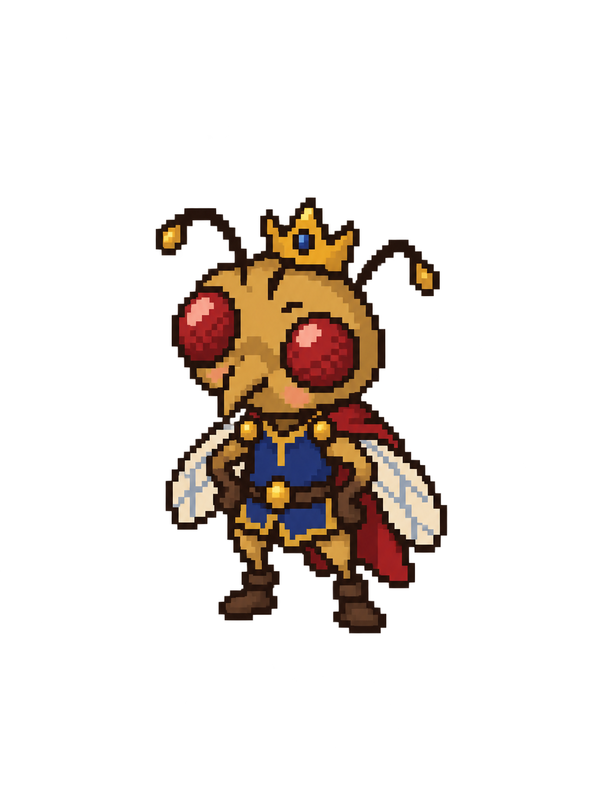
Prince Hamlet
New: compact gold prince with small crown
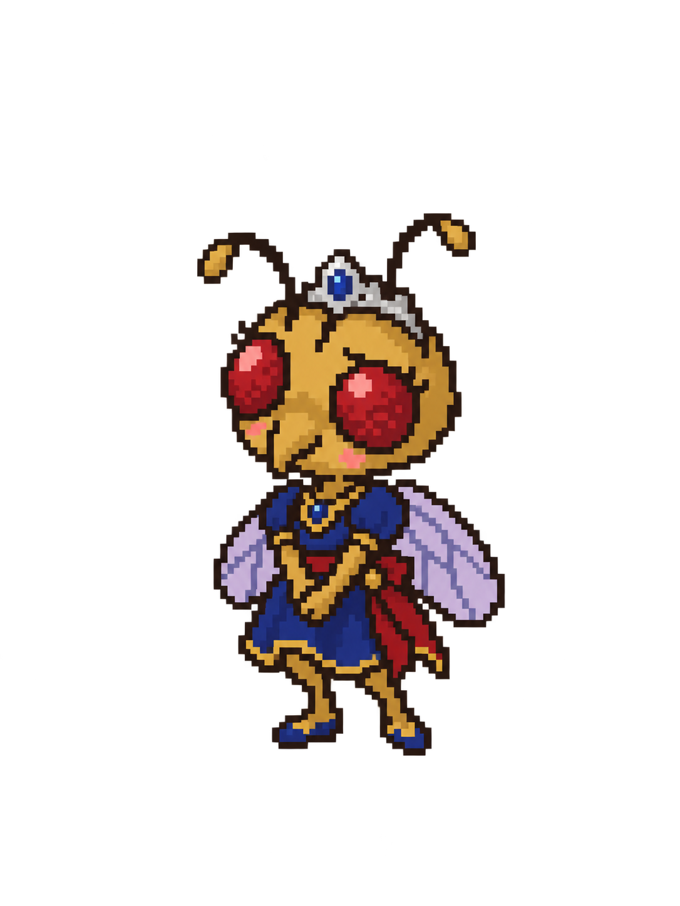
Princess Miranda
New: tiara and lavender wings
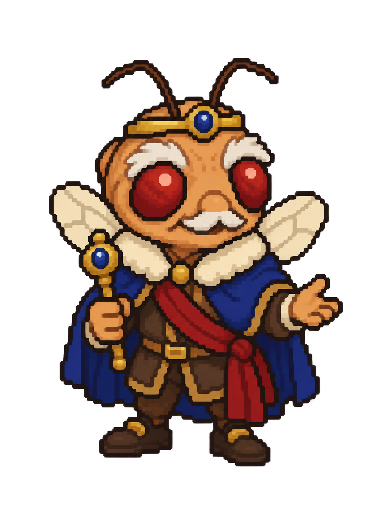
Duke Prospero — nice
Welcoming; use after defeating the Giant
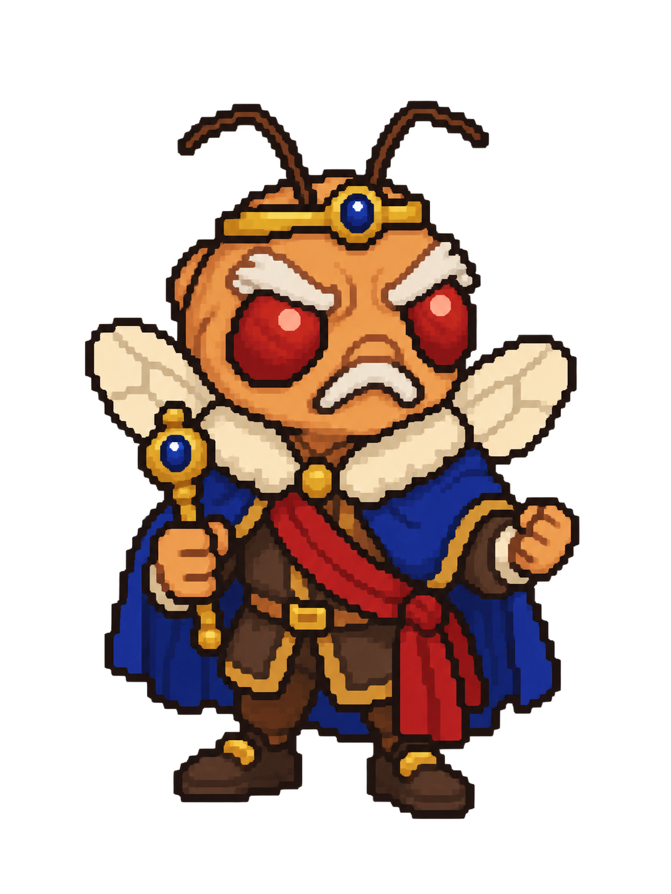
Duke Prospero — mad
Frowning; use after losing to the Giant
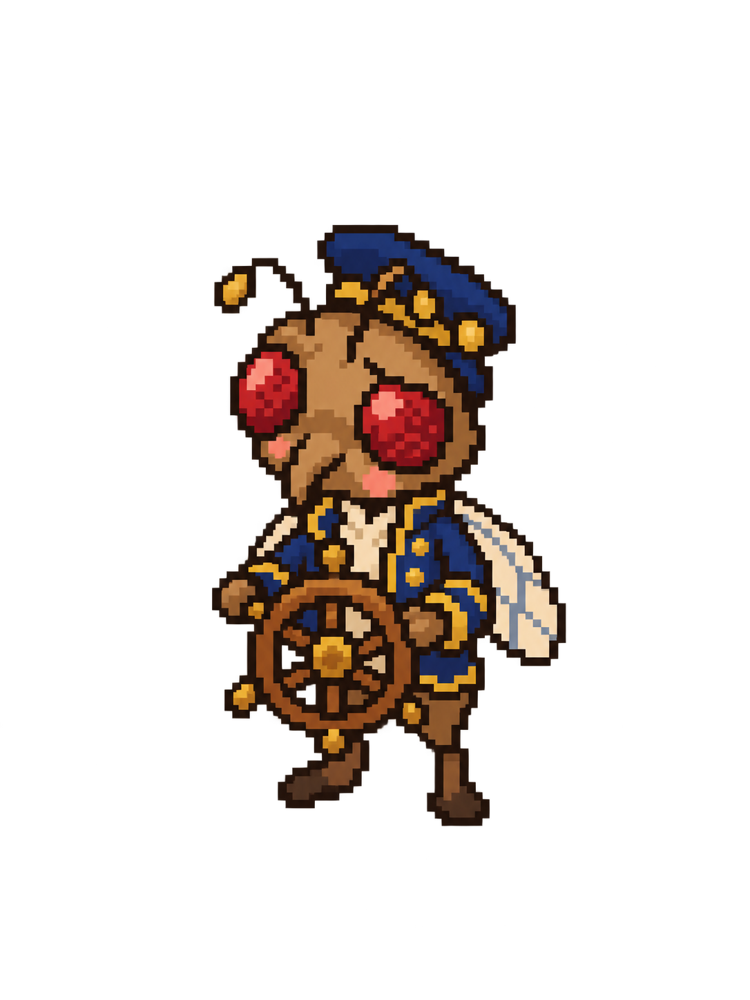
Council — Helmsman
New: wheel, blue navigator coat
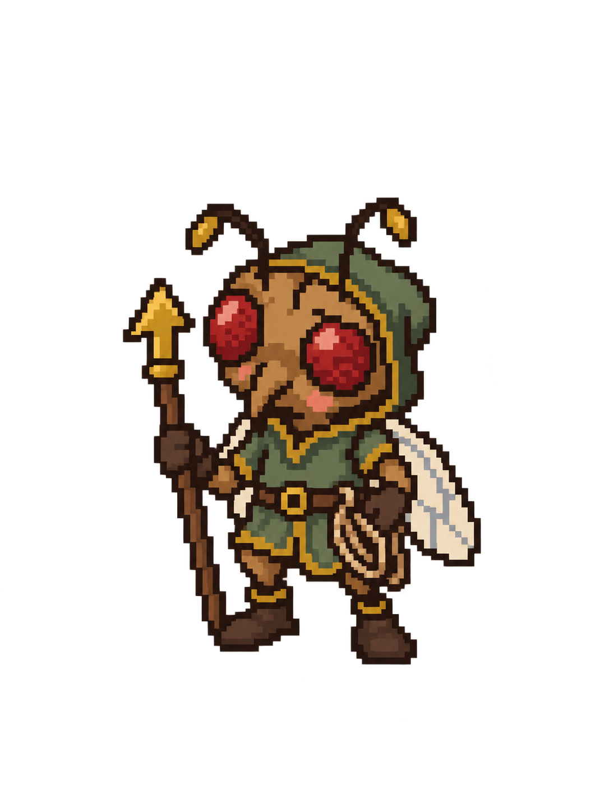
Council — Liftmaster
New: arrow staff, rope, green hood
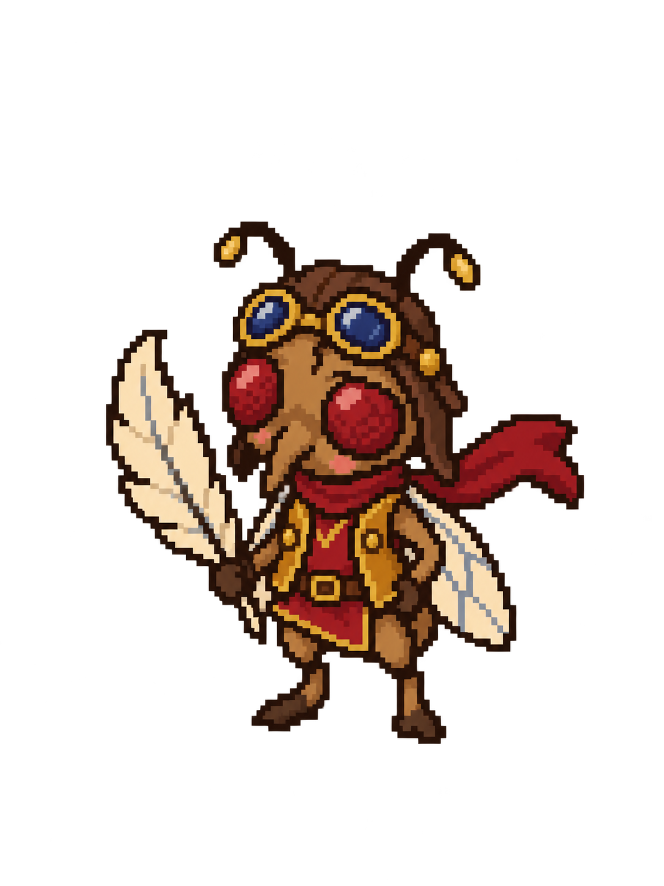
Council — Wingmaster
New: goggles, scarf, feather
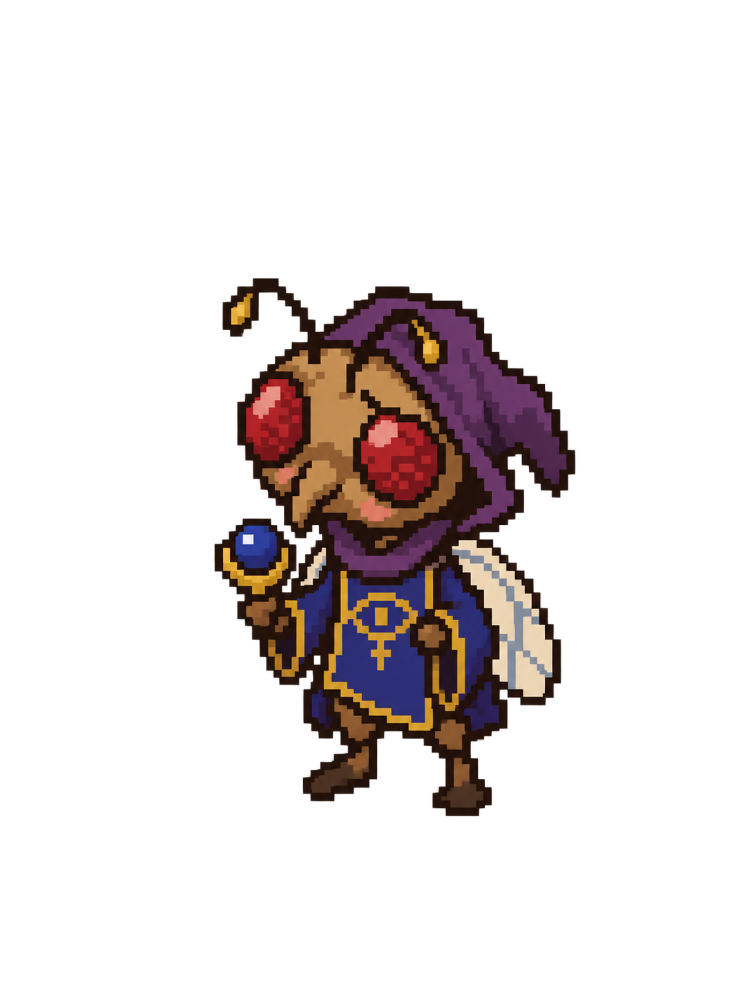
Council — Royal Seer
New: eye emblem, purple hood, orb
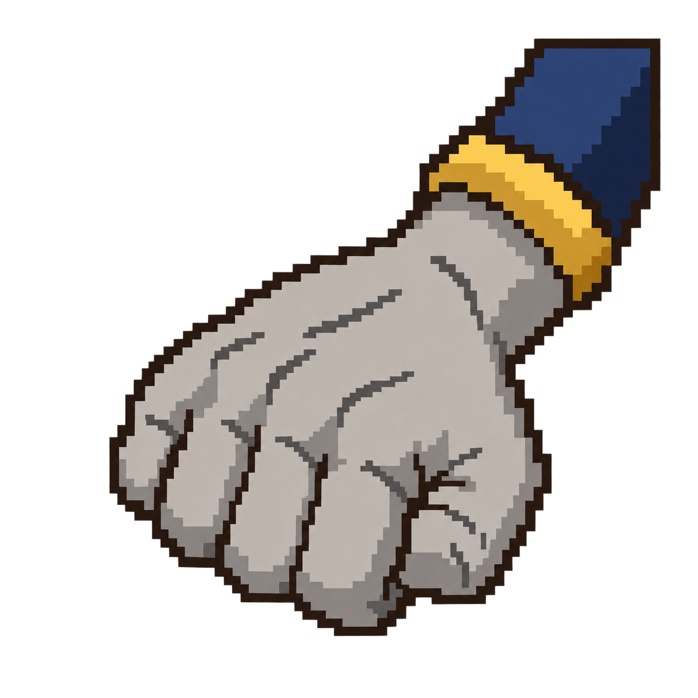
Giant
Hand representation of the established obstacle
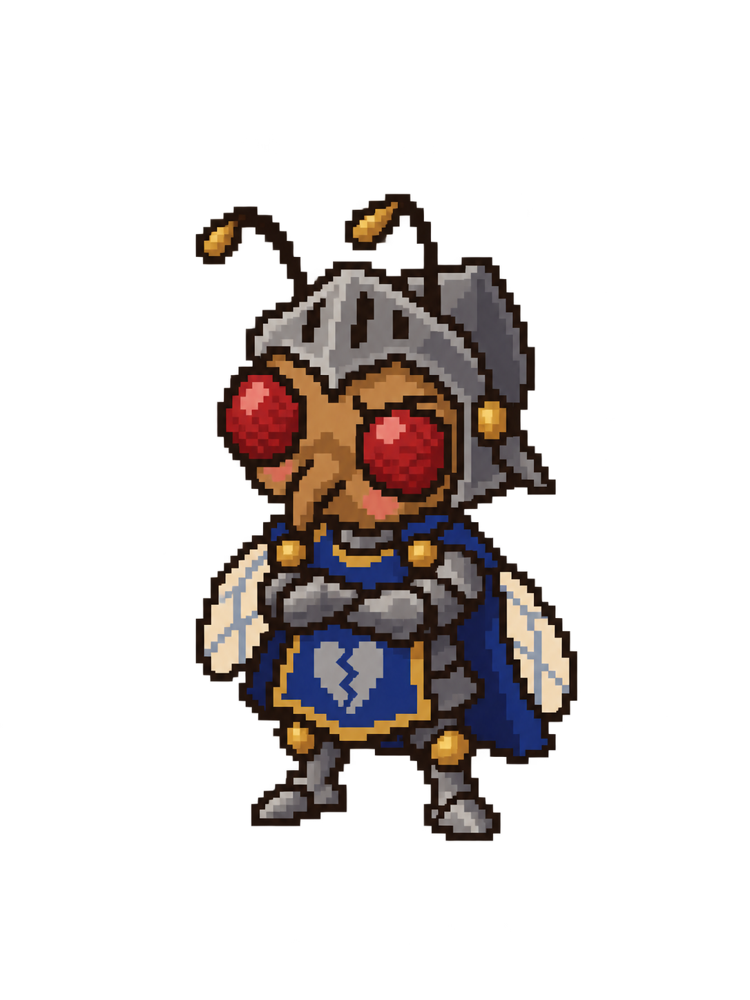
Lord Tinman
Revised: compact armor and broken-heart tabard
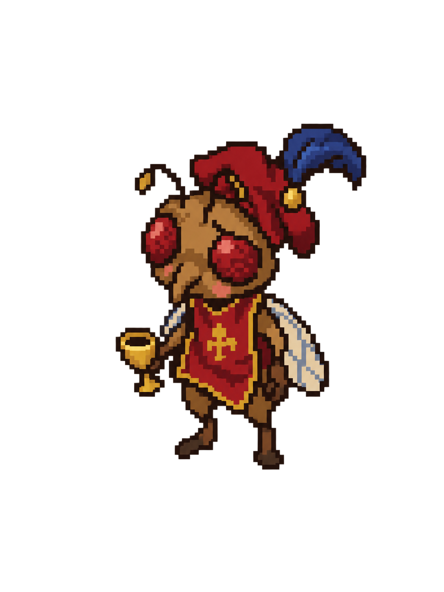
Sir Cheapdate
Tipsy expression, feather cap, goblet
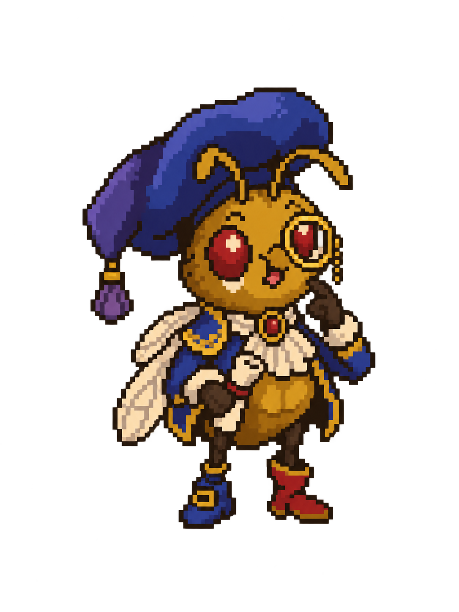
Count Rutabaga
Puzzled expression, monocle, mismatched boots
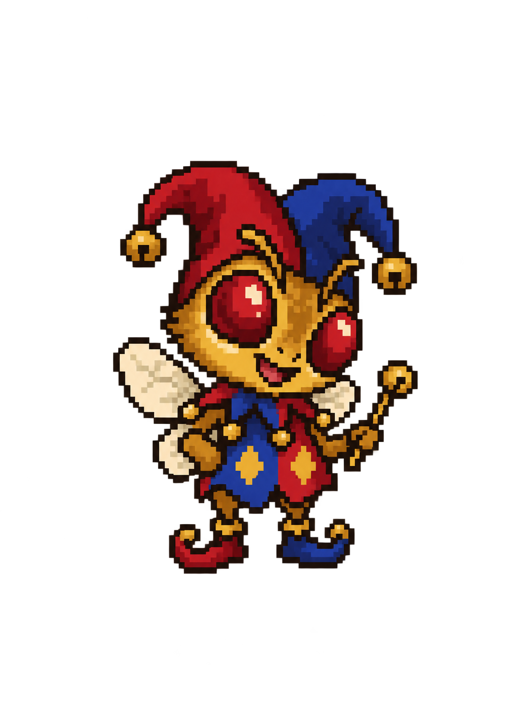
Clown, the Court Jester
Narrator: bell hat and joke baton